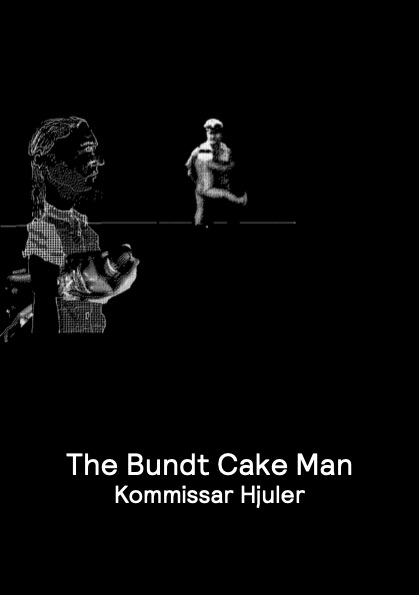

| Editions Cox | About | Contact |
|---|

Kommissar Hjuler’s THE BUNDT CAKE MAN is set two generations after the October 27, 2025 detonation of an atomic bomb on Hamburg, followed by a British counter-attack on October 28, 2025. Earth’s geopolitical order has shifted many times over, and each time the details have been obscured by revisions made to the historical records.
Humanity has meanwhile spawned an all-male species of flying mutants who live like gods on Olympus in the company of their all-female staff. Despite their often questionable superpowers, various character flaws, and occasional identity crises, the superheroes are supposed to carry out the task of protecting humanity from itself.
Then, through the loosening of Olympian standards, a serial killer is admitted among them. While a secretary begins pursuing her own suspicions raised by information stored on an old computer, another superhero becomes concerned that the Olympian system itself is beginning to fall apart.
THE BUNDT CAKE MAN is a novel of extremes set off against the familiar and everyday. It is boldly imaginative in its depictions of violence and perversity, but it also brings a lighter playfulness and emotional range to its many slice-of-life scenes. It mixes crass humour with sociopolitical satire. It is divergent, fantastic, and experimental, yet the results are also remarkably concise and entertaining.